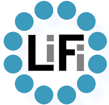
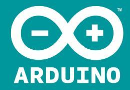
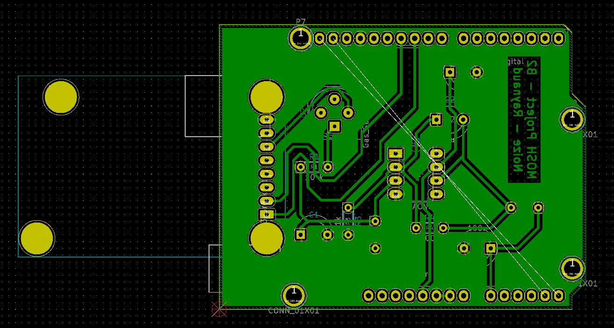
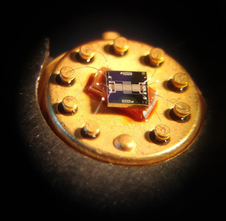
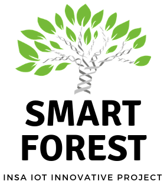
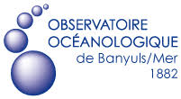

Portfolio
Descriptive part
PRESENTATION OF EXPERIENCES LINKED TO THE ISS TRAINING
Experiences overview
| Date | Duration | Context | Functions |
|---|---|---|---|
| 4th year internship | |||
| June-September 2018 | 3 Months | R&T activities within the Innovation Lab in Safran Engineering Services |
|
| Smart devices | |||
| October 2018 | 3 weeks | Realization of an Arduino Shield for an integrated Gas sensor |
|
| December 2018 | 1 week | Manufacturing and integration of a gas sensor using nano-technology |
|
| Communication | |||
| October 2018 | 2 weeks | Wireless communications interference problem | Study case of ZigBee interferences in free space |
| October 2018 | 1 week | Iridium Next presentation | Presentation on the Iridium Next technology |
| October 2018 | 1 week | Sigfox Network study | Production of a report and a presention on Sigfox network |
| November 2018 | 2 week | MAC Layers for Wireless Sensor Networks | Production of a report on the main MAC layers used in WSN |
| November 2018 | 2 week | Software-Defined Radio application |
|
| Middleware and Services | |||
| December 2018 | 2 week | OM2M Labs | |
| January 2019 | 2 week | Room autonomic management project |
|
| January 2019 | 2 week | Cloud and autonomic management labs |
|
| Analysis and Data processing, Profesionnal applications | |||
| October 2018 | 2 week | Design of a meteorological knowledge base |
|
| October 2018 | 2 week | The place of sport in french society |
|
| Innovative project | |||
| October 2018 - January 2019 | 4 months | Smart Forest - Development of connected and fully autonomic weather stations for La Massanne nature reserve |
|
| Innovation and humanity | |||
| October 2018 | 2 weeks | Application of TRIZ method in the Smart Forest project | |
| January 2019 | 2 weeks | Social Psychology |
|
| Merckathon | |||
| November 2018 | 2 (intense) days | Smart Dive - Water collecting data system for Banyuls Observatory |
|
Experiences description
R&T activities within the innovation lab
Environment and context
I did my 4th internship in Safran Engineering Services (Blagnac) withing their innovation lab in the Embedded Sytems department. In this lab, they are exploring new technologies in order to meet their clients expectations. Therefore, many fields are used such as: Drones, IoT, Big Data, Virtual Reality, Li-Fi, ... In this context, I had the opportunity to contribute to two projects: a modulary drone and a Visible Light Communication transceiver.
My functions
 As I said, I could participate to two projects. For the modulary drone, I worked on the physical modelization and command aspects that lead to the readction of an intern technical note in order to capitalize my work. I used concept such as: analytical and numerical linarization, synthesis and simulation of various controllers (Kalman Filter, State-Feedback, Linear Quadratic Regulator). Then, I worked on the conception and implementation of a VLC transceiver where I particapted to the redaction of the technical specifications, the modelization of the photoreceptors and the design of the system architecture. Then, I made a working prototype that allows serial communication between two Arduino. For this part, I used SPICE to make all the electronicals simulation and I could manipulate various comunications protocols (UART, I2C, SPI, ...) and modulation techniques (OOK, OFDM, ...).At the end of this internship, I made a poster to summarize these three months that you can find below.
Realization of an Arduino shield for an intergrated gas sensor
Environment and context
The Smart Devices course is focused on the hardware part of IoT, it gives us a first experience with microcontrollers and their architecture, how to use them with sensors and actuators and how to use C/C++ to program them. Finally, it also allows us to to have a first experience in electronics from the conception to the final PCB. During this course, we had to developp a gas sensor shield as an example of a possible IoT application. This shield has to inferface the gas sensor we've later produced in the AIME with the arduino and also integrate a LoRa transceiver to send the datas to The Things Network cloud. I worked with
My functions
During this project, we first designed a 2-levels transimpedance amplifier to interface our gas sensor with the Arduino, this amplifier takes an intensity in input and convert it to a voltage in output that can be treated by the microcontroller, you can find the schematics below. Then we imported our electronical scheme in Kicad software and made the routing between all the components. You can find the 3D views of our PCB generated by Kicad below. Then, we re-used the code that we had developped in the tutorials to get the values of the gas sensor send them to TTN Cloud through LoRa with an RN2483 transceiver and finally display them on a Node-RED dashboard.
All this project is available on the following GitHub:
Manufacturing and integration of a gas sensor using nano-technology
Environment and context
For this training, we spend one week at the AIME to build our gas sensor. We had the opportunity to use their clean room and their expertise in micro-electronics and nano-technologies.
My functions
During this project, we first produced tungsten (WO3) nano-sticks with a chemical reaction betwen Na2WO4, HCl and H2O. We, then, we produced electronic chip by engraving a silicon wafer using photolitography techniques. After this, we deposed our tungsten sticks on the chip thanks to dielectrophoresis. Finally, we electrally caracterized our gas sensor and we observed them using a Scanning Electron Microscope (SEM). You can find below our sensor datasheet:
GAZ SENSOR DATASHEET !!!!!!!!!!!!!!!!!!!!!!!!!!!!!!!!!!!!!!!!!!!!!!!!!!!
Design of a meteorological knowledge base
Environment and context
During this training, we we were introduced to the concepts of the Web 3.0 also known as the Semantic Web. This is particulary interesting for IoT technologies that are creating more and more data everyday. Thanks to Semantic Web, we are linking datas that they could be understable by a computer who then can deduce new informations automatically and, thus, build a knowledge graph. During the labs, we had to design and build a meteorological knowledegse base that will later be enriched with an open dataset in Aarhus, DK. For these labs, I worked with Mathieu Raynaud
My functions
In this project, we first used Protégé to design a semantic otology for meteorological observations. In a second time, we used a Java API to interact with our ontology and provide data to it. Then, we were able to have a better understanding of these data and to analyse them. All our work has been consigned in the following report:
Smart Forest - Development of connected and fully autonomic weather stations for La Massanne nature reserve
Environment and context
 As a team of five (Erwann Béguin, Waël Ben Jemaa, Jean-Baptiste Laffosse, Mathieu Raynaud and I), we lead a project on the development of a smart weathers stations to monitore La Massanne forest located in Banyuls-sur-Mer. The objective of the researchers is to study the forest behavior, especially, when it is facing extreme weather conditions (heat-wave, drought,...). Currently, the researchers are collecting the datas by going to the forest and take measuremetns on several points but they want to have an automatic way to retrieve these datas in a more global way. We come with the idea to deploy a network of weather stations that will collect data and send them back to the research center using a Low Power Wide Area Network.
My functions
 For this project, we developped weather station working with an Arduino Uno implementing mulitple sensors (Temperature, Humidity, Ozone, GPS). The weather stations collect data every hour, then, they're sent to a gateway and The Things Network cloud through LoRa using a RN2483 transceiver. Then, these data are automatically collected by a NodeJS server thanks to a REST API and displayed in an Angular JS dashboard. All this architecture is summarized in the adjacent architecture. If you want more informations feel free to check the following report:
For this project, we developped weather station working with an Arduino Uno implementing mulitple sensors (Temperature, Humidity, Ozone, GPS). The weather stations collect data every hour, then, they're sent to a gateway and The Things Network cloud through LoRa using a RN2483 transceiver. Then, these data are automatically collected by a NodeJS server thanks to a REST API and displayed in an Angular JS dashboard. All this architecture is summarized in the adjacent architecture. If you want more informations feel free to check the following report:
Smart Dive - Water collecting data system for Banyuls Observatory
Environment and context
In November 2018, we participated to a Merckathon organised since 2017 by both the oceanological observatory and research center of Banyuls-sur-Mer and INSA Toulouse. The researchers there face many problems and our IoT expertise is really a great opportunity for them. Every team of students are trying to answer one of these issues by deploying a smart devices. Our team was composed of five students: Laurent Chasserat, Julien Chouvet, Jean-Baptiste Laffosse, Mathieu Raynaud and myself. We chose to work on a device that diver working for the observatory could carry when they are diving and that automatically collect useful data for the researchers.
My functions
 We implemented a solution using an Intel Edison board with a temperature sensor, a pressure sensor and an ultrasonic ranger sensor. You can see in the adjacent figure the architecture, of our project. The main issue, we faced is that you can't retrieve the diver position using GPS because electromagnetic waves can't go through water, thus, we need to use mechanical waves. So, the diver carries our module that automatically collects datas in the water. We also got the boat and two buoys that communicate with our devices using ultrasound waves in order to compute its position using triangulation. Then, the position of the boat and the two buoys is retrieved thanks to GPS and, thus, the position of the diver can be computed. I personnaly worked on the hardware part with Julien and you can find all the differents parts in the following GitHub repositories as well as our final presentation:
We implemented a solution using an Intel Edison board with a temperature sensor, a pressure sensor and an ultrasonic ranger sensor. You can see in the adjacent figure the architecture, of our project. The main issue, we faced is that you can't retrieve the diver position using GPS because electromagnetic waves can't go through water, thus, we need to use mechanical waves. So, the diver carries our module that automatically collects datas in the water. We also got the boat and two buoys that communicate with our devices using ultrasound waves in order to compute its position using triangulation. Then, the position of the boat and the two buoys is retrieved thanks to GPS and, thus, the position of the diver can be computed. I personnaly worked on the hardware part with Julien and you can find all the differents parts in the following GitHub repositories as well as our final presentation: